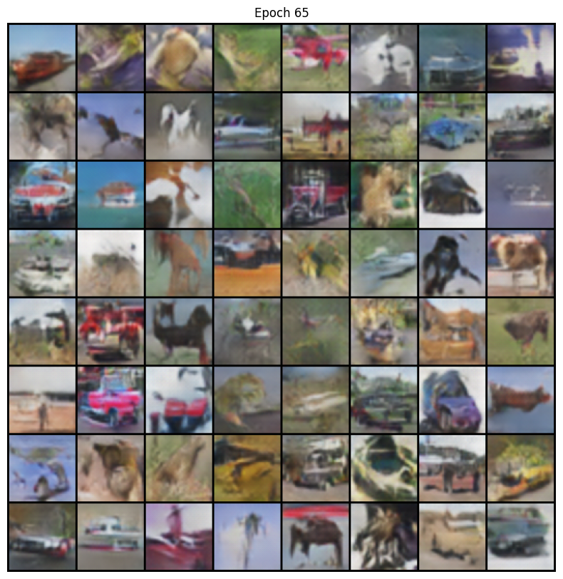
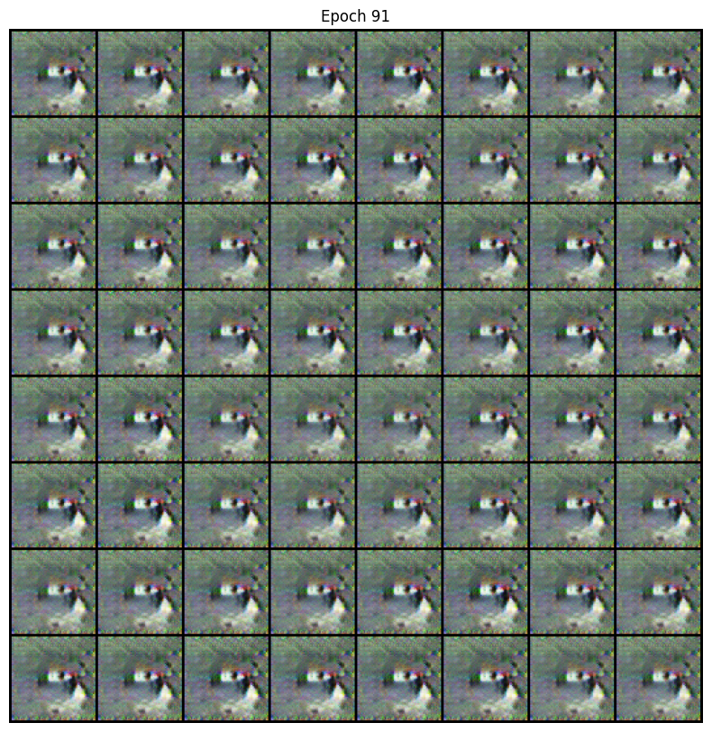
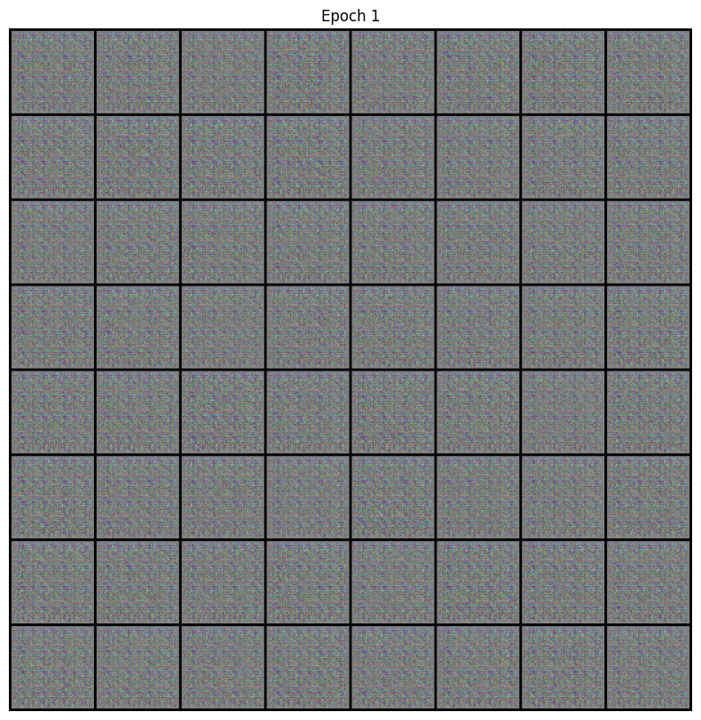
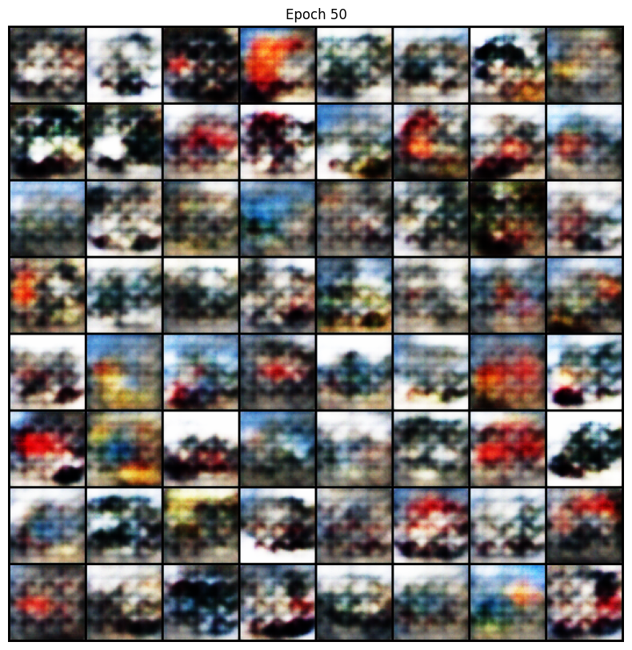
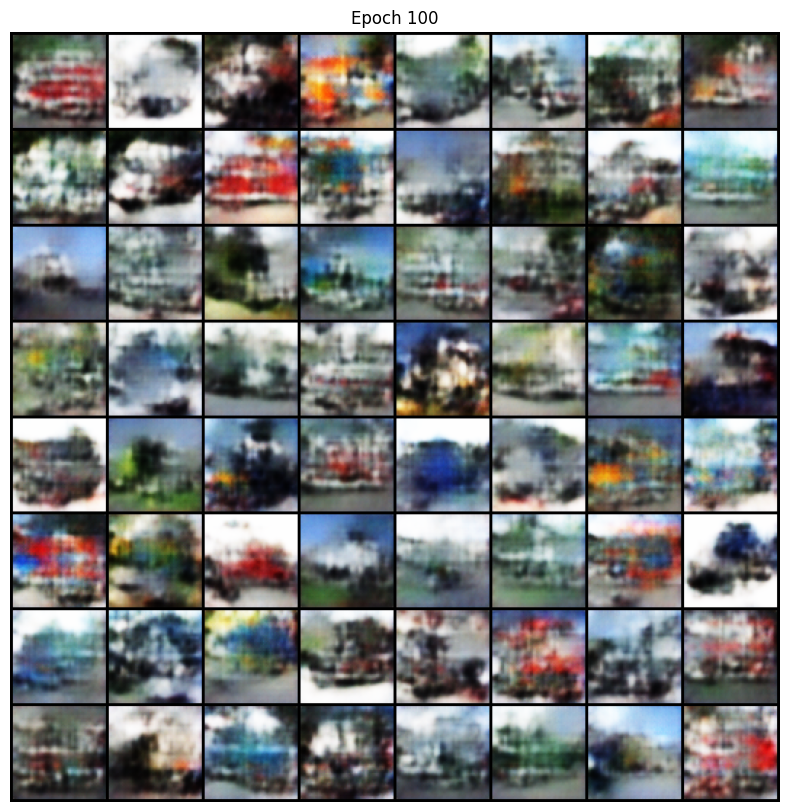
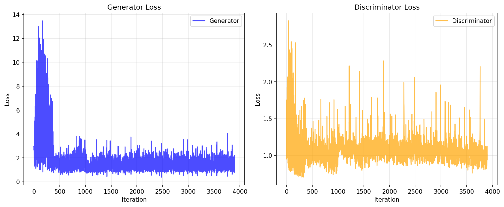

Overview
This project uses GAN (Generative Adversarial Network) to generate images. The concept is simple: two AI models compete against each other — one creates "fakes" and the other tries to detect them. Eventually, the faker becomes increasingly skilled.
The Problem
What is Mode Collapse?
The most common issue when training GANs is "Mode Collapse":
The Generator discovers that producing only one specific type of image can fool the Discriminator. So it takes a "shortcut" and only produces that one type. The result: all generated images look exactly the same.
What Happened in My Experiment?
In my first experiment, Mode Collapse suddenly occurred at epoch 91:
- All generated truck images became the same color
- Almost no variation between images
- Discriminator accuracy spiked to nearly 100%
Root Cause: The Discriminator became too strong, leaving the Generator unable to learn, forcing it to find shortcuts.
Solutions
I experimented with 3 versions, progressively solving the problem:
V0: Baseline Failed
Training all 10 CIFAR-10 classes → Mode Collapse at epoch 91
V1: Single-Class Training Success
Only training on "truck" class, with Label Smoothing to "weaken" the Discriminator
V2: Adding Dropout Best
Added Dropout to Discriminator, further preventing it from being too strong → 29% improvement
Key Techniques
1. Label Smoothing
Changed "real=1, fake=0" to "real=0.9, fake=0.1" to prevent Discriminator overconfidence
2. Dropout Regularization
Randomly disable 30% of neurons to prevent Discriminator from overfitting
3. Training Balance Control
When Discriminator accuracy >80%, reduce its training frequency
4. Single-Class Training
Start with a single class to reduce learning complexity
Results
Mode Collapse Comparison (V0 vs V1/V2)
V0 Mode Collapse (Epoch 91)


Training Progress Comparison (V1 vs V2)
Early Training (Epoch 1)


Mid Training (Epoch 50)


Training Complete (Epoch 100) - Final Results


Training Loss Curves


How to Read These Charts?
Each chart has two lines: Blue is the Generator, Orange is the Discriminator.
Healthy Training
The two lines should "pull and push" each other, maintaining dynamic equilibrium. If one keeps dropping while the other keeps rising, it indicates imbalance.
Why is V2 Better?
V2's curves have smaller fluctuations and are more stable, indicating smoother training with better balance between Generator and Discriminator.
Conclusion
Balance is Key
The key to GAN training is keeping the Generator and Discriminator balanced. If either becomes too strong, problems arise.
Start Simple
Begin with a single class, then tackle more complex tasks after achieving success.
About Image Quality
While the results "look like something," the images are still very unclear and hard to recognize. This is not just a training issue — the CIFAR-10 dataset itself has very low resolution (originally only 32×32), so even upscaled to 64×64, the details are inherently limited.
Future Plans: Experiment with Diffusion Models and higher resolution image datasets to compare the effectiveness of different generative models.